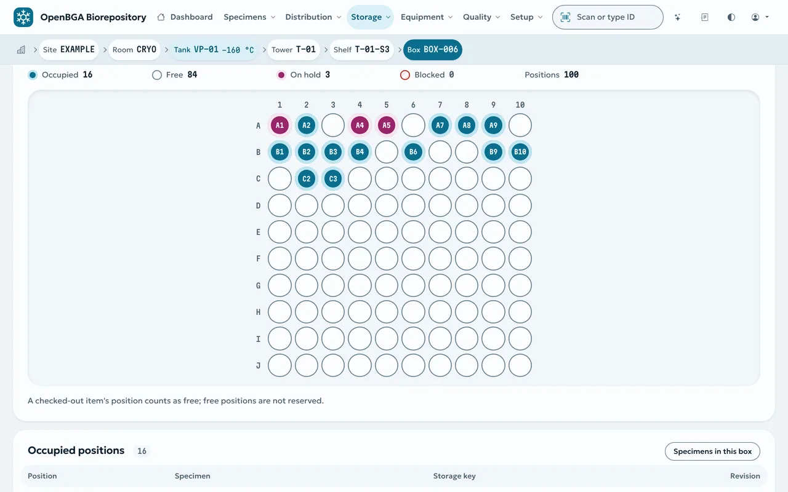
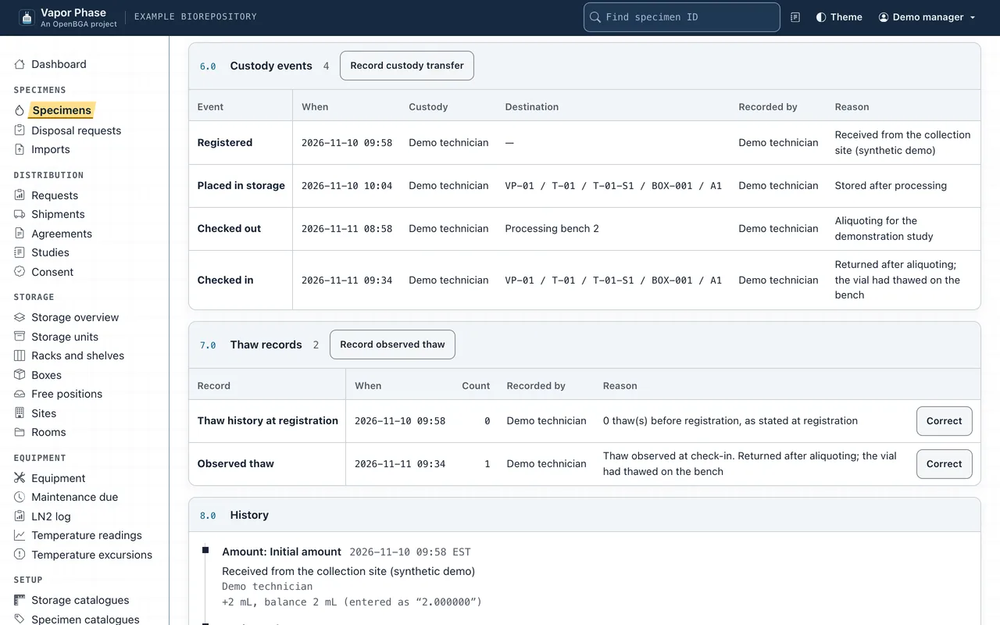
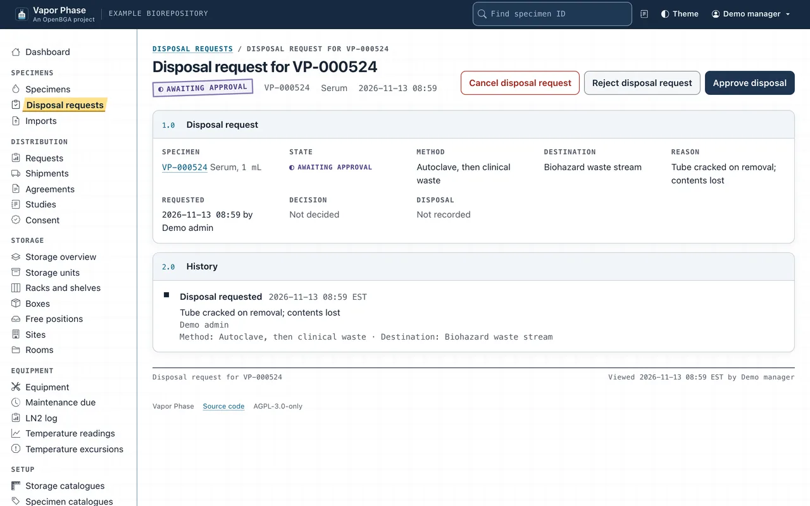
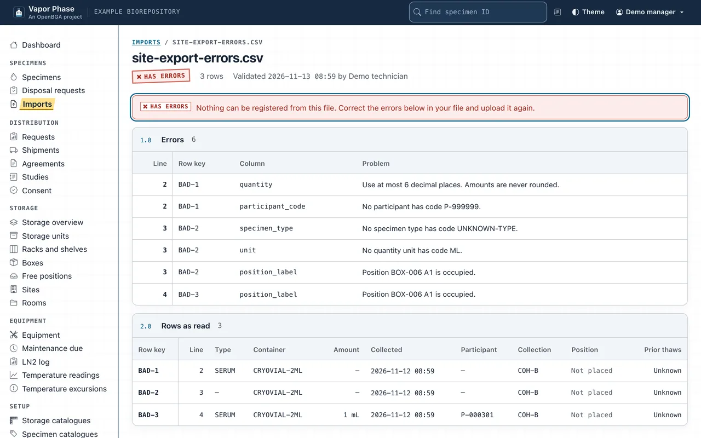
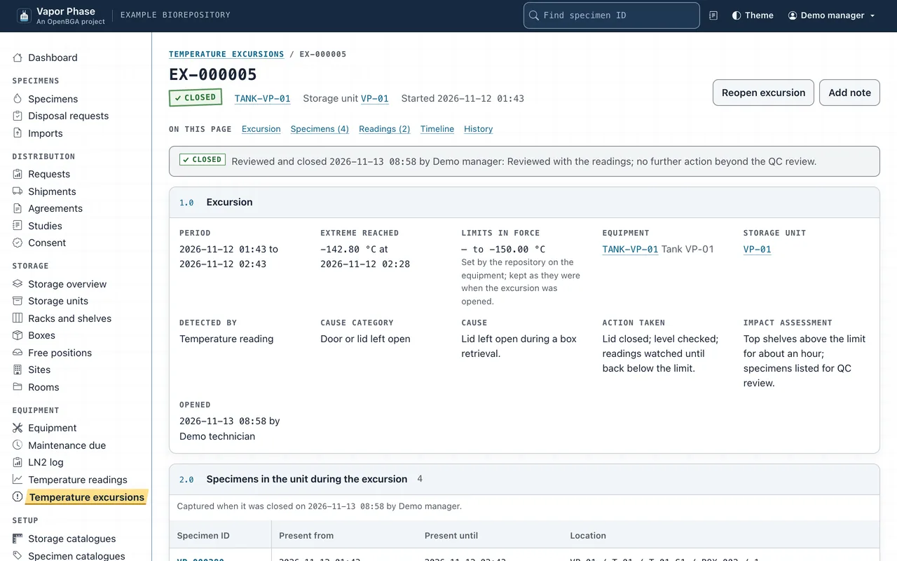
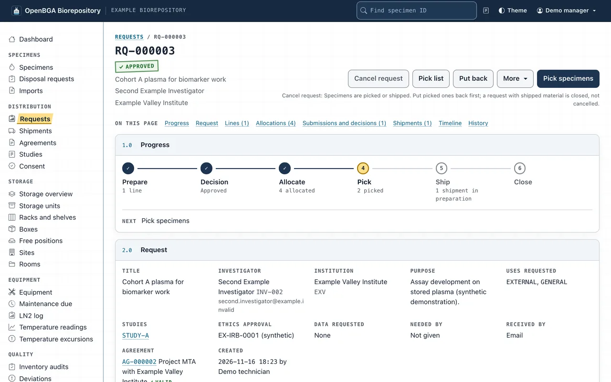
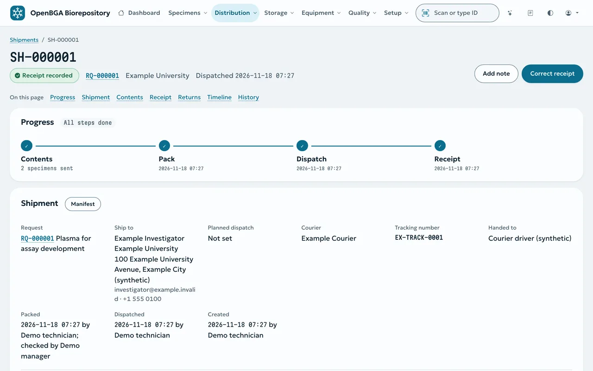

Every specimen.
Every move.
OpenBGA Biorepository is a free, open-source biorepository management system: where every specimen is, what it is, who handled it and what happened to it.
It follows a specimen from registration into a position in a vapor-phase tank or freezer, through aliquots, check-out and check-in, to disposal with a second person's approval, and keeps every step on record.
AGPL-3.0-only · In development

From the tank
to the record.
The journey the software is built around, end to end. It works today.
Define storage
Describe units, racks, boxes and their position grids, with each unit's storage class and temperature.
Register and store
Give each specimen an opaque identifier, print its label and place it in a free position.
Use and track
Split aliquots, check material out and back in, count observed thaws and move whole boxes.
Dispose or distribute
A different person approves a disposal. A request is checked against the consent and agreement records before material is sent, and the history stays.
A history that
stays intact.
The record of a specimen is part of the specimen. OpenBGA Biorepository records it as the work happens and keeps it when something later changes.
- Nothing is overwritten
- Custody, moves, check-out and check-in are appended events. A correction adds a record with its reason, and the database refuses to change or delete history.
- One specimen per position
- The database enforces occupancy, so two people cannot store into the same position.
- Exact quantities
- Quantities are exact decimals with explicit units, kept as a ledger of additions and removals.
- Second-person disposal
- Nobody approves their own disposal request, and an approval lapses if the specimen changes. Disposal frees the position and keeps the record.
A closer look.
Seven moments from the demo repository that ships with the project: a box, a specimen's custody, a disposal waiting for a second person, an import that failed its checks, a temperature excursion that was reviewed and closed, a specimen request on its way to the requester and the shipment it ended in.
Storage
See what is where, and what is free.
Every box shows its positions as a map: occupied, free and blocked. A checked-out specimen's position counts as free, and free positions can be searched by unit, rack or box. Boxes, racks and shelves move with their contents as one recorded event.

Custody
Who had it, when, and for how long.
Each specimen record lists its custody events and thaw records with who recorded them and why. Time out of storage is computed from check-out and check-in, never typed. A thaw is recorded when it is observed; a history from before registration can stay marked unknown.

Disposal
A second person decides.
A disposal is a request with a method, destination and reason. A person who holds the approval permission and did not make the request approves or rejects it. A hold blocks it, and the approval lapses if the specimen changes before the disposal is recorded.

Import
Check a file before anything is saved.
A CSV of specimens is validated first: every problem is listed by row and column, and nothing is registered, numbered or placed until a file without errors is committed, all rows or none.

Equipment
The tank's own record.
Each tank and freezer has a record of its service events, LN2 level checks and fills, and temperature readings, entered or imported from a file. When a reading leaves the limits your repository set, an excursion is opened, submitted, and closed by a second person. Closing captures the specimens that were in the unit at the time.

Distribution
From a request to the requester's bench.
A request for specimens is decided by a second person, checked against participant consent and the executed agreement, then allocated, picked, packed and dispatched. The request shows where it stands and what the next step needs. Allocated specimens carry a use hold until they ship.

Shipments
What was sent, and that it arrived.
A shipment records its contents, the packing declarations, the courier and the receipt. Packing can be checked by a second person, who must differ from the packer, and the manifest is generated from the record. Returns are reviewed by a manager.

What the first
release covers.
Designed for one repository organization per deployment, with staff access by role. Participants are coded identifiers only: no name, contact or record number is stored.
| Area | What stays with the work |
|---|---|
| Storage | Sites, rooms, freezers and tanks, racks, shelves, boxes and positions, with occupancy, blocked positions, free-position search, templates and recorded moves. |
| Specimens | Type, container, exact quantity with unit as a ledger, collection and processing times, aliquots and derivatives with lineage, and a coded participant. |
| Custody | Placement, check-out and check-in with computed time out of storage, hand-overs, observed thaws, holds and disposal with approval. |
| Equipment | Tanks, freezers, monitors and supply dewars tied to their storage units; service events and due dates, an LN2 level and fill log, temperature readings and reviewed excursions, against limits and levels your repository sets. |
| Distribution | Studies that govern collections, consent records by scope with withdrawal, requests decided by a second person, allocation, pick lists, shipments with the shipper's declarations and manifests, receipt confirmation, returns held for review, and agreements. It records what the shipper declares and what your records say; it never classifies a shipment or decides consent. |
| Throughput | Code 128 labels, scan-to-lookup, CSV import with validation, filters, sorting and CSV export. |
| Audit | An attributed, append-only record of every change with the values before and after and the reason. |
Try it on
your machine.
With Docker and Compose installed, these commands build the application, start it beside a local PostgreSQL database and load a synthetic repository with a few hundred specimens, its equipment records and a distribution workflow with consent records, requests and shipments. It is reachable only from your machine and is meant for evaluation, not for real repository data.
git clone --branch main https://github.com/openbga/biorepository.git
cd biorepository
docker compose --profile app up --build -d
# Choose a private password of at least 12 characters.
read -s DEMO_PASSWORD; export DEMO_PASSWORD
docker compose --profile app exec -e DEMO_PASSWORD web \
python manage.py seed_demo --fullThen open http://127.0.0.1:8000 and sign in as demo_admin, demo_manager, demo_technician or demo_viewer with that password. To try a request, create and submit one as the technician, then decide it as the manager: only the manager holds the request decision permission, and nobody decides a request they submitted.
Meet the project.
OpenBGA Biorepository is maintained in openbga/biorepository. It uses Django and PostgreSQL, with a browser-based workspace for repository staff.
It is in development. Use synthetic data only. OpenBGA Biorepository supports a repository's own records and quality system; it does not certify compliance or accreditation.